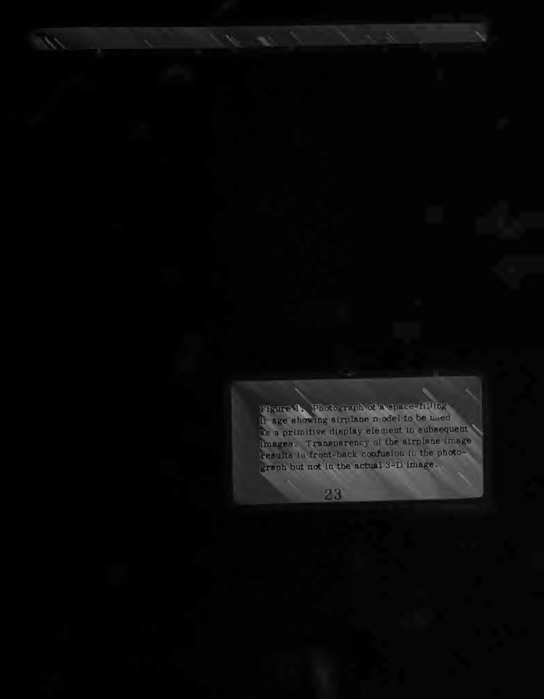
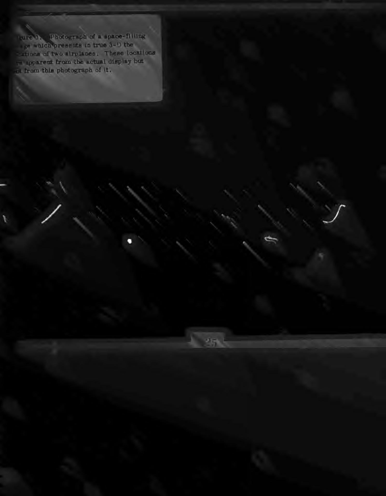
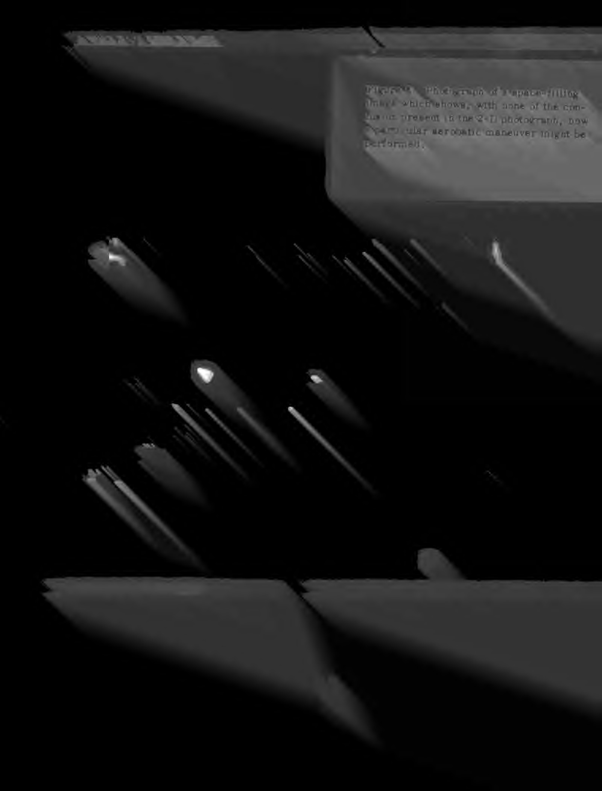

BBN Spacegraph
A true 3D display — a vibrating mirror sweeps a CRT image through a volume of air you point into

Overview
The BBN Spacegraph is one of the earliest true volumetric 3D displays: a varifocal (vibrating) mirror system built at Bolt, Beranek and Newman (BBN) in Cambridge, Massachusetts, starting around 1977. A CRT image is reflected off a circular front-silvered acrylic plate mirror about 40 cm in diameter that vibrates resonantly at ~30 Hz, driven by a woofer. Because the mirror flexes as a spherical cap, the reflected image sweeps through a display volume 33.8 cm deep, with each image element refreshed every ~33 ms (about 230 Hz refresh) on a low-persistence-phosphor CRT. Geometry correction follows Alan Traub's method (MITRE, 1968).
Lawrence D. Sher is the sole named inventor on US Patent 4,130,832 "Three-dimensional display" (filed July 11, 1977; granted December 19, 1978; assignee Bolt Beranek and Newman Inc.). By 1981 the system was mature enough for a 35-page Air Force Human Resources Laboratory final report (AFHRL-TR-80-60) documenting its use in flight-simulator instructor/operator stations — and for a third result described in that report: a pulsed laser beam aimed into the image volume for pointing and selecting "light buttons." The technology was licensed to Genisco for its commercial SpaceGraph product line (c. 1982–83), used at the Mayo Clinic for tomographic volume display and at Stanford for craniofacial surgery planning.
Deep dive
Most "3D" displays of the era were stereoscopic pairs or mirror tricks. The Spacegraph produces actual three-dimensional points in space: the vibrating mirror's changing curvature sweeps the CRT's image plane back and forth, so each vector is written at the depth where the mirror focuses it. Hidden-line elimination "in the usual 2-D sense does not work here, since a line may or may not be hidden depending on the viewer's head movement" — meaning the display had genuine view-dependent parallax. The mirror's rim carried 50 segmented weights so it flexed as a spherical cap with one circular node; mirror deflection was only 0.4 cm peak-to-peak, but a leverage factor of 85 produced the 33.8 cm image sweep. Two viewers could see the same 3D image simultaneously, and the report notes that "interactivity distinguishes SpaceGraph images from holographic images."
The 1981 AFHRL report's third result: "a new means was designed and brought near to operational status whereby the viewer can easily direct a pulsed laser beam into the image for the dual purposes of pointing and of selecting light buttons." This is a genuine reach-into-the-volume selection paradigm — the user aims a physical laser into floating 3D space and the machine reads which "light button" the beam strikes. A machine-erected cursor was listed as a future refinement, but the laser pointing was the interaction mechanism actually pursued. Applications documented in the report include outside-in views of aircraft and a 3D "bulls-eye" landing-approach display with error-bound volumes.
The patent explicitly cites Alan C. Traub's varifocal work (US 3,493,290, 1970; MITRE M68-4, 1968) and adopts Traub's geometry correction. BBN's contribution was the stiff rim-weighted plate mirror replacing the tensioned membrane — enabling larger size, quieter operation, and writing on both half-cycles of the vibration. Genisco licensed the patent for its commercial SpaceGraph (6100/6600 series, ~$60–90k), which reached the Mayo Clinic's Dynamic Spatial Reconstructor group (IEEE Trans. Medical Imaging, 1986), Stanford, and geophysical users. A later BBN/Spacegraph Ltd. patent (US 4,462,044, 1984) covered the timing system, and a 1988 SPIE paper documented a PC-peripheral incarnation.
Every other 3D exhibit in the museum is either stereoscopic (Sega SubRoc-3D, Vectrex 3D Imager, Fakespeare BOOM), head-tracked 2D (TELESAR), or a mirror illusion (Sega Hologram Time Traveler). The Spacegraph is the collection's only true volumetric display: real 3D points in air, view-dependent parallax, and a laser pointer aimed into the volume. It is the ancestor of every later volumetric display and, conceptually, of 3D spatial UIs.
Team & pioneers
- Lawrence D. Sher. BBN engineer; sole inventor of US Patent 4,130,832 "Three-dimensional display" (1977/1978); author of the 1981 AFHRL final report on the SpaceGraph in flight simulation.
- Bolt, Beranek and Newman (BBN). Cambridge, MA research company; built the Spacegraph display and conducted the Air Force flight-simulator research (contract F33615-79-C-0013).
- Alan C. Traub. MITRE engineer whose 1968–70 varifocal mirror work is the cited prior art and geometry-correction basis.
- Genisco Technology Corp. Licensed the patent and sold the commercial SpaceGraph (1982–83), used at Mayo Clinic, Stanford, and elsewhere.
Media


Sources
- US Patent 4,130,832 — Three-dimensional display (Sher, BBN, 1977/1978)
- AFHRL-TR-80-60 — Flight Simulator: Use of SpaceGraph Display in an Instructor/Operator Station (Sher, BBN, July 1981)
- SPIE Proceedings 902 (1988) — Spacegraph, a true 3-D PC peripheral
- Harris, Camp, Ritman, Robb — IEEE Trans. Medical Imaging 1986 (Mayo Clinic varifocal display)
- US Patent 4,462,044 — Timing system for a three dimensional vibrating mirror display (1984)
- Wikipedia — Volumetric display